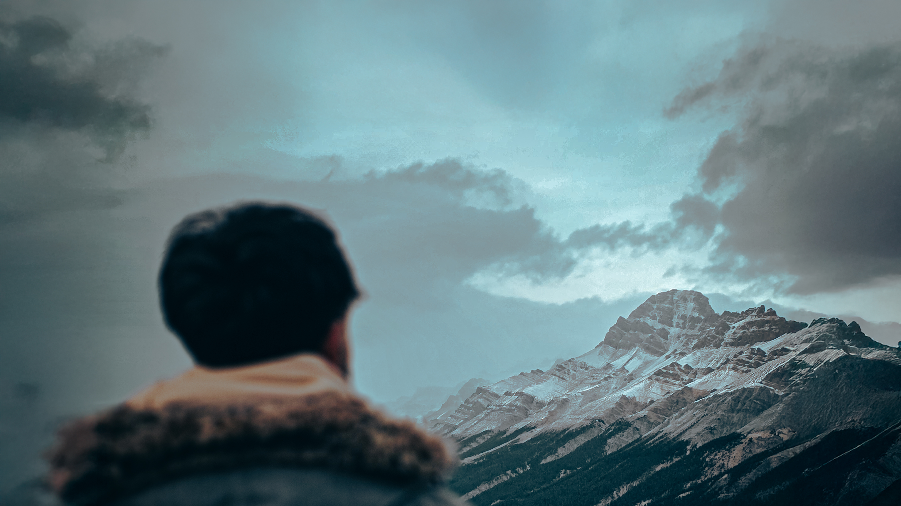
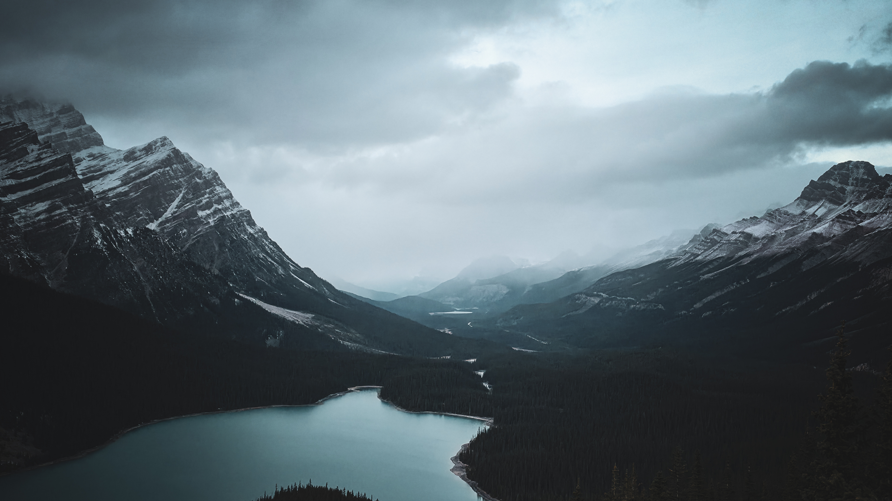
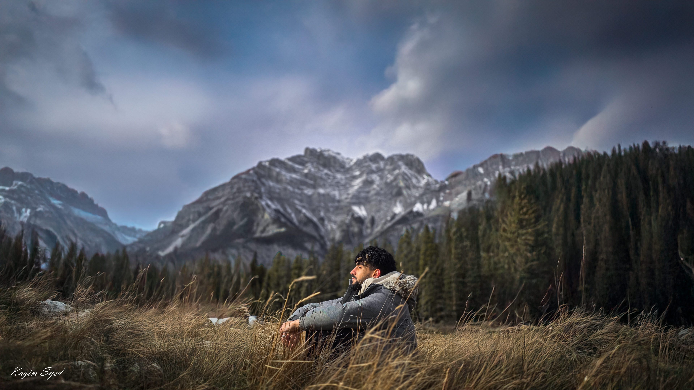

Photography is how I slow down. There's something about framing a scene, waiting for the light to shift, deciding what to include and what to leave out, that forces a kind of attention I don't get anywhere else. I picked up a camera a few years ago and quickly realized I wasn't content just shooting locally. I started planning trips around locations I wanted to photograph: places where the landscape does something dramatic, where the conditions are unpredictable, and where getting the shot means actually being there at the right moment. It's equal parts travel, patience, and luck.
Banff was one of those trips I'd been putting off for years, convinced the photographs I'd seen online were exaggerated. They weren't. The Rockies in October sit in a kind of golden-hour glow for most of the afternoon, and the lakes reflect colours that feel almost unreal. I spent three days there with my camera, waking up before sunrise and staying out until the last light disappeared behind the peaks. These are three of my favourite frames from that trip.



- Return to Banff in winter to shoot the frozen lakes
- Plan a trip to Patagonia for landscape work
- Build a proper photography portfolio site